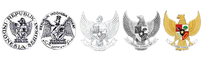
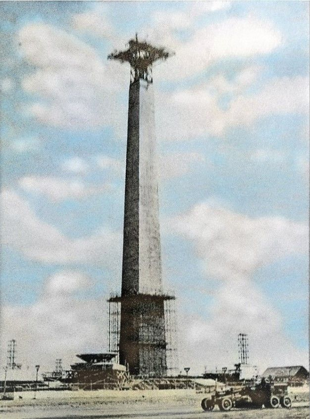
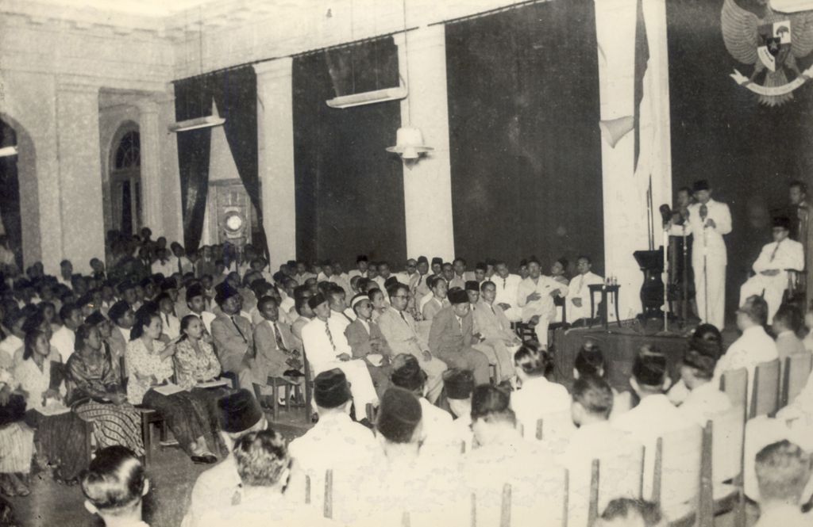
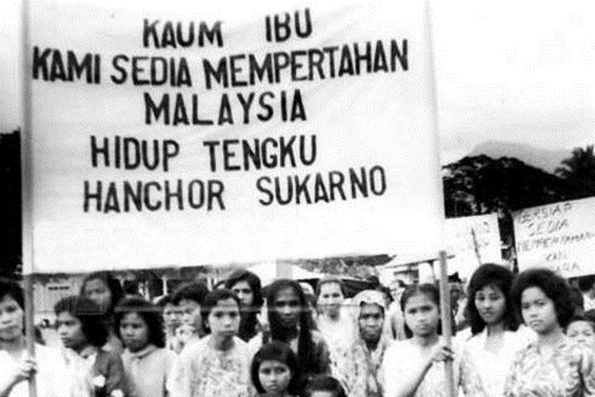
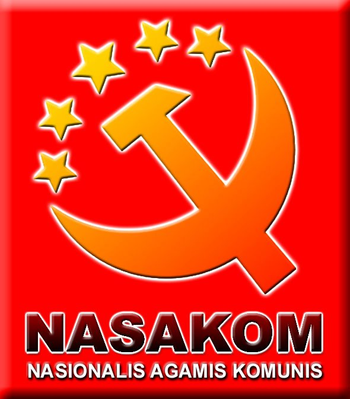

Gelora Bung Karno
Monas

Jakarta Bypass

Jembatan Ampera
DEMOKRASI
TERPIMPIN
|  |
|
Pada masa Orde Lama Pancasila mengalami ideologisasi, yang dapat diartikan bahwa Pancasila sedang berusaha dibangun dan ditanamkan sebagai keyakinan dan kepribadian bangsa Indonesia. |
|
Politik Mercusuar Politik mercusuar adalah politik yang bertujuan untuk mengagungkan nama Indonesia di forum internasional. Dalam menjalankan politik ini, Soekarno membangun banyak sekali ikon-ikon seperti Gelora Bung Karno, Monas, Jakarta bypass, Jembatan Ampera yang membuat kerugian besar dalam bidang ekonomi. |
|
Gelora Bung Karno |

Monas |
Jakarta Bypass |
Jembatan Ampera |
|  |
Pengangkatan dan Pembubaran DPR DPR diangkat oleh presiden meskipun seharusnya melalui pemilihan umum. Pembubaran DPR hasil pemilu 1955 oleh presiden. |
||
|
Konflik dengan Malaysia |
 |  |
Percampuran Nasakom |